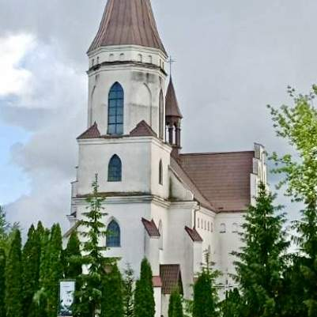
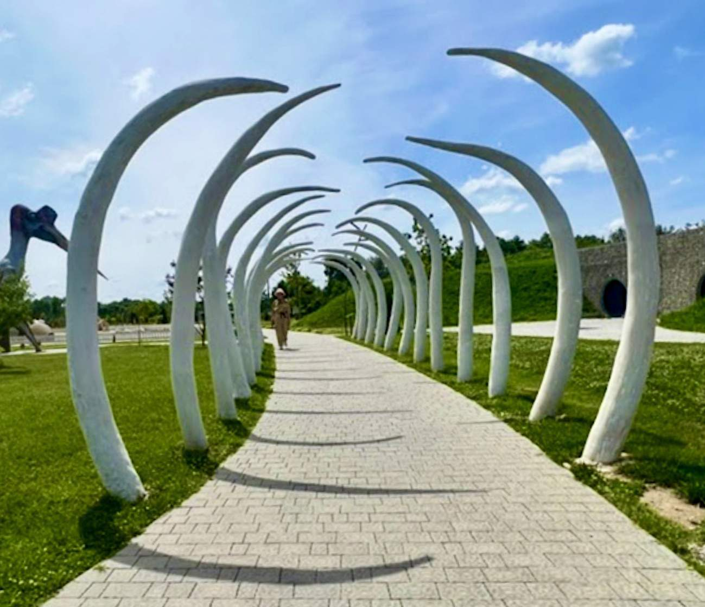
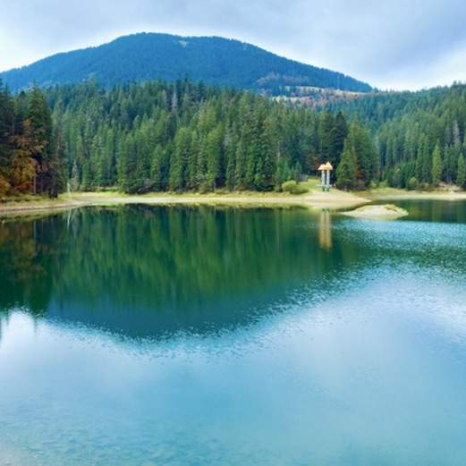

Новинки
Приїзд до готельного комплексу. Поселення вільний час. Огляд музею вівчарства та майстерка шкарпеток. Варіння сиру та його дегустація. Ватра та пікнік. Ночівля. Сніданок. Похід у гори до високогірної гойдалки та майстерка гуцульської писанки. Виїзд до Львова.
Спробуємо себе як ткачі та ткалі за давніми килимарськими верстатами. Майстер-клас валяння. Молитовний огляд Чудотворної ікони Розп'ятого Ісуса. Переїзд на пасіку "На Білому потоці". Час на пікнік і відпочинок, частування трав'яним чаєм, майстер клас свічки, огляд пасіки.
Басівка криївка, підйом витягати на гору Захар Беркут, там час на пікнік, відвідання музею Гори Маківка. Можна додати при бажанні підйом на гору Маківка.
Молитва біля Чудотворної ікони Розпʼяття, або у Скалаті піднімемось на гору де дітей Благословила Мати Божа, а для нас залишила відбиток стопи і цілюще джерело, мандрівку продовжимо у Скалатському замку. У Сатанові прийдемо у Звіринці підвісним мостом, що завдовжки у кілометр, поглянемо з висоти на життя Тварин.
Відвідання відпустового центру у Старуні (каплиця, що нагадує Ейфелеву вежу). Відвідання парку Землі. Час на пікнік
Бережанський замок оглядово, Відвідання замку та майстерка витинанки.У Чесниках зануремося у неповторний світ олійного ремесла, подегустуємо олії, та зануритися у світ Сакрального Галицького надбання у місцевому храмі.
Відвідання Городоцького музею Підпільної Церкви На Еко ранні погудуємо коників, свинок, час на пікнік. Ознайомимось із Комплексом "Живої Історії".
Відвідання батьківщини митрополита Андрея Шептицького, коротка екскурсія та майстерка написання монохромної ікони на склі. Переїзд до Вільшаниці де на березі озера маємо нагоду для пікніку, та рибалення. Взяти коцики.
Відвідання Дідусевої аптеки. Поринемо у казковий світ музики Гуцульського краю у музеї Кумлика, а на завершення погуляємо у парку Хобітів.

Екскурсія Звенигородським музеєм, огляд давнини з допомогою ЗD окулярів, 12 локацій, що дарують море емоцій. Відвідання Фражського Чудотворного джерела та Чудотворної ікони Божої Матері опікунки родини. Відвідання Галицького реабілітаційного центру тварин. Час на пікнік у Ремісничій підгородді. Майстерка ковальства, ливарства, стрільби з лука.
Оглянемо Підгорецький замок, молитва біля Чудотворної ікони, ознайомлення із давнім пліснеським городищем майстер-клас лицарських боїв, час на пікнік.
Оглянемо Олеський замок, молитва біля відбитку стопи Богородиці, відвідання давньої криївки проводу УПА, огляд криниці щастя, час на пікнік, майстерка Гаварецької кераміки.
Огляд і ознайомлення виробництва, майстерка із виготовлення сирних кульок, дегустація сирів.Переїзд до Басівського лісу, мандрівка лісом, тунелем, зустріч з повстанцями, ознайомлення із історією найбільшої в Україні криївки, огляд криївки, вікторина, Час на пікнік.
Відвідання ведмедиків, лазанка, час на пікнік. Відвідання Страдчанських печер, мандрівка печерними, коридорами, молитва у храмі біля Чудотворної ікони. Відвідання Новояворівського краєзнавчого музею, ознайомлення із Яворівськими промислами, майстерка малюнком кавою.
Оглядово замок, джерело, храм,Чудотворна ікона, вали святого Володимира, криївка.Відвідання пасіки (ознайомлення із бджолярством, катання на фірі, майстерка свічки, можливість поспати на вуликах, час для пікніку)
Мандрівка Жовквою, відвідання Крехівського монастиря (похід до печер, джерела). Майстерка мила, або розпис Яворівської забавки. Час на пікнік.
Відвідаємо Зашків Батьківщину Євгена Коновальця де вдягнемо військову амуніцію, перепливемо озеро на човні, а з допомогою карт, компасів і підказок шукатимемо криївку, а опісля ватра.

Огляд Збаражського палацу та підземель. Відвідання Костелу Святого Антонія. Переїзд до Тернополя, прогулянка набережною, огляд острову Закоханих, катання на пароплаві.
Відвідання Бузького палацу, для дівчаток можливість приміряти капелюшки, а хлопцям військову амуніцію, квест у Бузсьських підземеллях, мандрівка до єнотів, єнототерапія. Час на пікнік. Майстер-клас.

Підйом на вʼїзну вежу, відвідання Луцьких підземель, що входять в десяток найбільших підземель України. Відвідання будинку художника, що розташований на березі річки Серет. Відвідання Тунелю Кохання, час на пікнік. Оглядини Тараканового форту.
Підйом на Вежу Дзвіницю, огляд підземного храму, та молитва біля Чудотворної ікони Матері Божої. Похід до каменя Велетня. Час на пікнік. Відвідання Дубенського замку та Тараконового форту.
Відвідання Бориславського храму Святої Анни, де відчуємо особливу опіку 1000 святих, кожен зможе віднайти мощі святого чи святої якої носить імʼя. Майстерка забавки з сіна.
Прогулянка лісовою стежкою до Казкової поляни. Відвідання Чудотворного джерела Ярина. У Бориславі відвідаємо Нафтовий музей.
Мандрівка Басівським лісом, зустріч з Повстанцями, захоплююча історія криївки і її мешканців, огляд криївки, вікторина. Переїзд до Тустані музей, підйом на скельний комплекс, відвідання джерела. У Підгородцях у Дворі майстерка збивання Масла, смакування ним на хлібі з печі, огляд музею давнини.
Молитва біля Чудотворної ікони Матері Божої. Час на пікнік. Відвідання скельного монастиря у Розгірче. Відвідання Басівської криївки.
У Биличах молимося за перемогу України, переїзд до села Недільна та підйом на гору Діл де є найвища деревʼяна вежа-дзвіниця Європи, час на пікнік. Відвідання Сироварні у Броняво.
Відвідання Бункеру лінії Арпада, Палац Шенборнів та Замок Сан Міклош, молитва біля Хреста втаємниченого у стовбурі дерева, відвідання Термалів у Берегово.
Відвідання Бункеру лінії Арпада водоспаду Шипіт. На Синевирському перевалі мандрівка джипа на плато. Прогулянка до Синевирського озера.
Великопосні пропозиції
Фрага Чудотворне джерело і Хресна дорога. Майстерка Гуцульської писанки у Єдиному в світі музеї Писанки.
Оглядова поїздка Жовквою. Майстерка Яворівської писанки
Відвідаємо Батьківщину Митрополита Андрея Шептицького у Прилбачах. Пройдемо Хресну дорогу неподалік джерела святого Онуфрія. Майстерка Яворівської писанки.
Зимові пропозиції
Відвідання Бориславського храму Святої Анни. Нафтового музею у Бориславі, а тоді резиденцію Святого Миколая (40 хвилин на зустріч з Добродіями, майстерка…) Опісля час на імпровізований пікнік, є можливість замовити комплексний обід, або піцу
Відвідання Фражського храму, де є Чудотворна ікона Божої Матері опікункою полини. У Коломиї в музеї Писанки майстерка сирних коників. Переїзд до Маєтку святого Миколая у Пістині: казкова територія Маєтку, час на пікнік, спалювання різок, відвідання маєтку: Пошта Миколая, кімната ялинкових забавки, природи, спальня Миколая, канцелярія і довгоочікувана зустріч з Небесним Добродієм! Чемні отримують дарунки. Дорослі групи можуть спробувати майстер клас скандинавської ходи